黑板用色：藍＝總應力（\(\color{#2c7fa8}\sigma\)、\(\color{#2c7fa8}\phi_{cu}\)），粉紅＝有效應力（\(\color{#c2507a}\sigma'\)、\(\color{#c2507a}\phi'\)）。下文公式沿用同色。應力單位皆為 kPa。
同樣是 CU 試驗，正常壓密黏土剪到破壞，量到的超額孔隙水壓是正的；換成重過壓密黏土，量到的卻是負的。同一台儀器、同一個步驟，為什麼符號會相反？
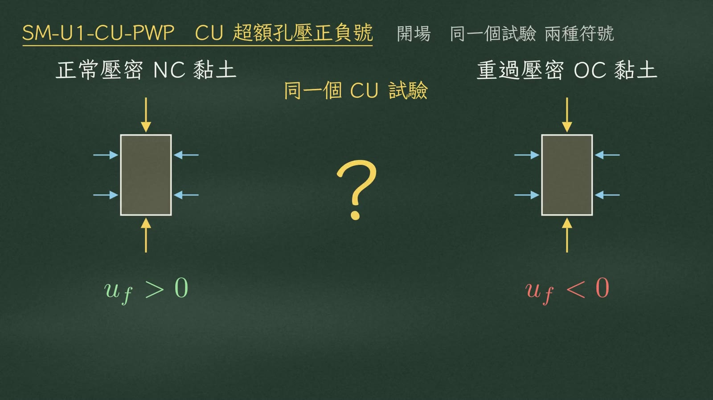
答案只有一句話：看土壤剪切時，是想變小，還是想變大。
| 體積傾向 | 名稱 | 孔壓 |
|---|---|---|
| 想變小 | 剪縮 | 擠出 \(u_f>0\) |
| 想變大 | 剪脹 | 吸出 \(u_f<0\) |
今天就把這句話畫成莫爾圓。
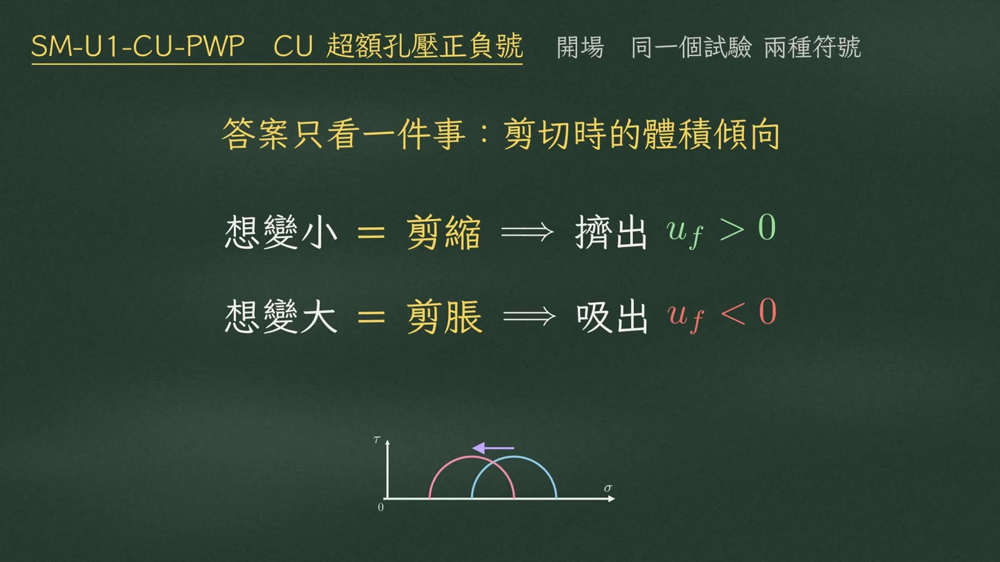
CU 試驗分兩個階段：
| 階段 | 排水閥 | 做什麼 |
|---|---|---|
| ① 壓密（排水） | 開 | 加圍壓 \(\sigma_3\)，等孔壓完全消散（\(\Delta u\to 0\)） |
| ② 剪切（不排水） | 關 | 活塞往下推，加軸差應力 \(\Delta\sigma_d\)，同時量孔隙水壓 \(u\) |
閥門關著，水出不去也進不來，土骨架想怎麼變形，全都轉成孔隙水壓。飽和土 \(B=1\)，剪切時圍壓不變（\(\Delta\sigma_3=0\)）：
$$\Delta u = B\left[\Delta\sigma_3 + A(\Delta\sigma_1-\Delta\sigma_3)\right]\ \Longrightarrow\ u_f = A_f\,\Delta\sigma_d$$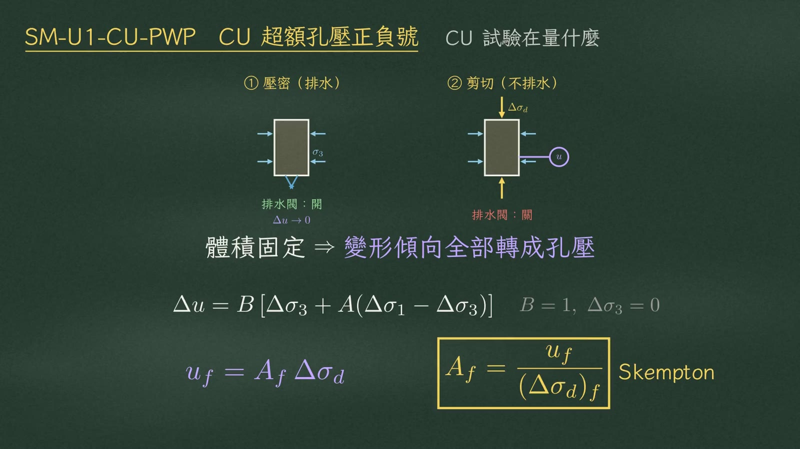
先看正常壓密黏土，簡稱 NC。它現在承受的，就是歷史上最大的壓力，顆粒從沒被擠緊過，排列比較鬆，留著大孔隙。
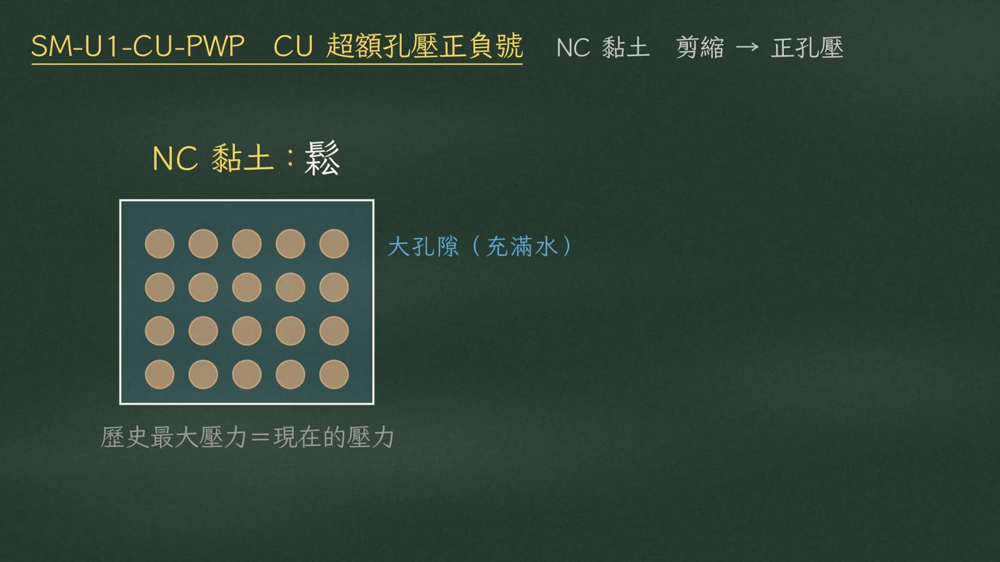
活塞往下推，鬆的顆粒會滑進旁邊的孔隙，整體想要縮小，這就是剪縮。可是閥門關著，體積縮不了，孔隙裡的水就被擠壓，產生正的超額孔隙水壓，\(u_f>0\)。
舉個數字：
| 項目 | 數值 |
|---|---|
| 圍壓 \(\sigma_3\) | 100 kPa |
| 破壞時軸差應力 \((\Delta\sigma_d)_f\) | 100 |
| 孔壓 \(u_f\) | +50 |
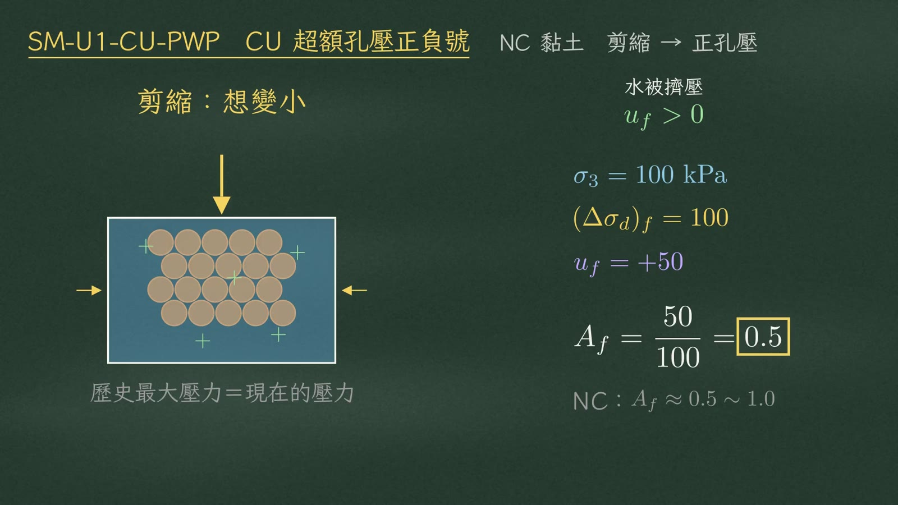
先畫總應力圓，再畫有效應力圓——兩個端點都要減掉 \(u_f=50\)：
$$\color{#2c7fa8}\sigma_3=100,\quad \sigma_1=100+100=200\quad(\text{半徑 }50)$$ $$\color{#c2507a}\sigma_3'=100-50=50,\quad \sigma_1'=200-50=150$$兩個端點減的是同一個 \(u_f\)，所以半徑一模一樣，整個圓只是往左平移 50。物理上，正水壓把顆粒撐開，顆粒間真正壓著的力變小，有效應力就降低。
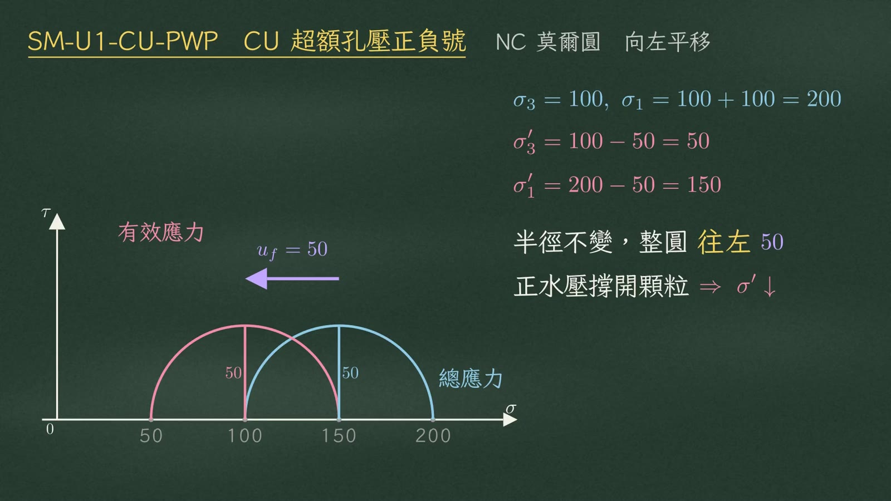
從原點畫切線：
| 圓 | sin φ ＝ 半徑／圓心 | 角度 |
|---|---|---|
| 總應力圓 | \(\sin\phi_{cu}=\dfrac{50}{150}=\dfrac13\) | \(\phi_{cu}\approx 19.5^\circ\) |
| 有效應力圓 | \(\sin\phi'=\dfrac{50}{100}=0.5\) | \(\phi'=30^\circ\) |
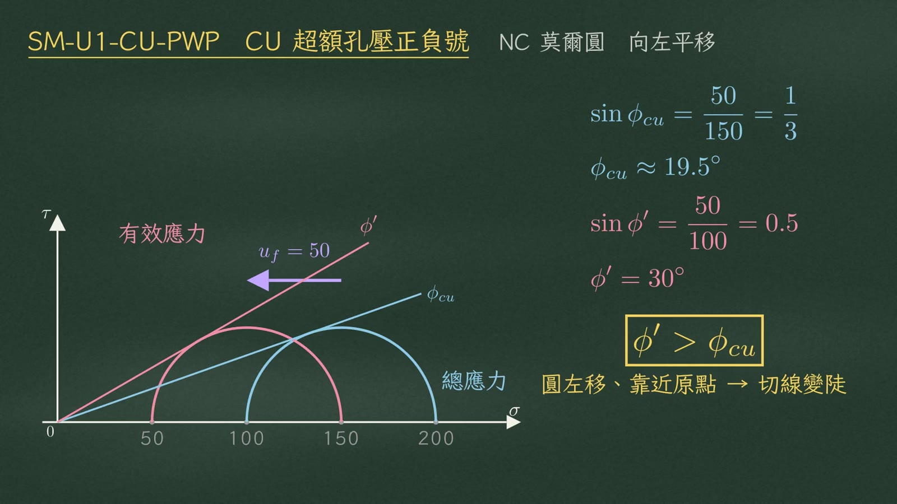
換成重過壓密黏土，簡稱 OC。它以前被壓過比現在大很多的壓力，例如上面曾有很厚的土層，後來被沖刷掉。顆粒被壓得很緊，一顆咬著一顆。
這時候活塞往下推，顆粒沒有空位可以滑進去，只能從鄰近顆粒上面爬過去，整體反而想要膨脹，這就是剪脹。
閥門關著，體積脹不開，土骨架往外撐，把孔隙水往外拉，水裡出現張力，\(u_f<0\)。
| 項目 | 數值 |
|---|---|
| 圍壓 \(\sigma_3\) | 100 |
| 破壞時軸差應力 \((\Delta\sigma_d)_f\) | 300 |
| 孔壓 \(u_f\) | −50 |
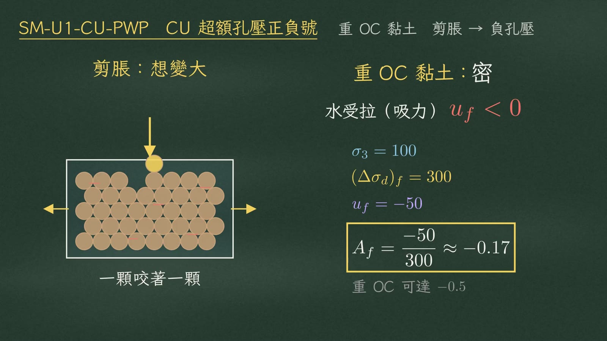
總應力圓：
$$\color{#2c7fa8}\sigma_3=100,\quad \sigma_1=100+300=400\quad(\text{半徑 }150)$$有效應力要減 \(u_f\)，減一個負五十，等於加五十：
$$\color{#c2507a}\sigma'=\sigma-u_f=\sigma-(-50)=\sigma+50\ \Rightarrow\ \sigma_3'=150,\ \sigma_1'=450$$所以有效應力圓往右平移 50。
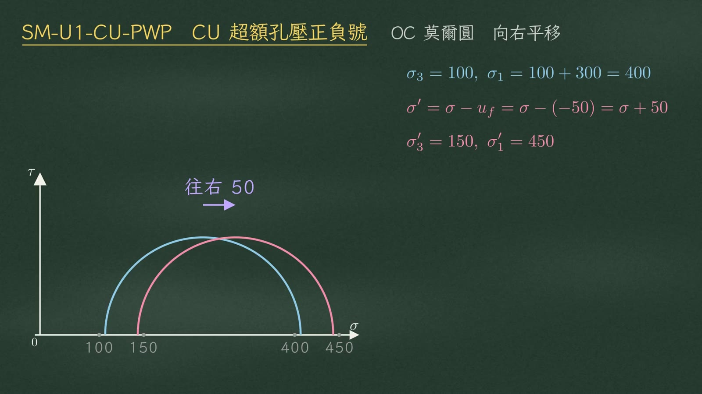
負水壓把顆粒往內拉緊，有效應力提高。算切線：
| 圓 | sin φ ＝ 半徑／圓心 | 角度 |
|---|---|---|
| 總應力圓 | \(\sin\phi_{cu}=\dfrac{150}{250}=0.6\) | \(\phi_{cu}\approx 36.9^\circ\) |
| 有效應力圓 | \(\sin\phi'=\dfrac{150}{300}=0.5\) | \(\phi'=30^\circ\) |
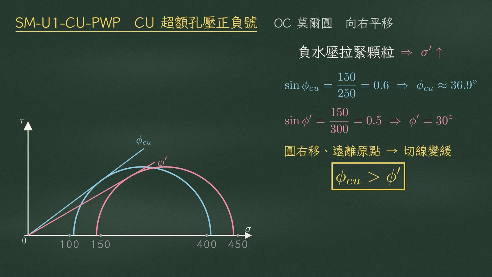
兩個例子的 \(\phi'\) 都是 30°，不是巧合：\(\phi'\) 是顆粒本身的摩擦性質，不因孔壓正負而改變，變的是總應力的 \(\phi_{cu}\)。
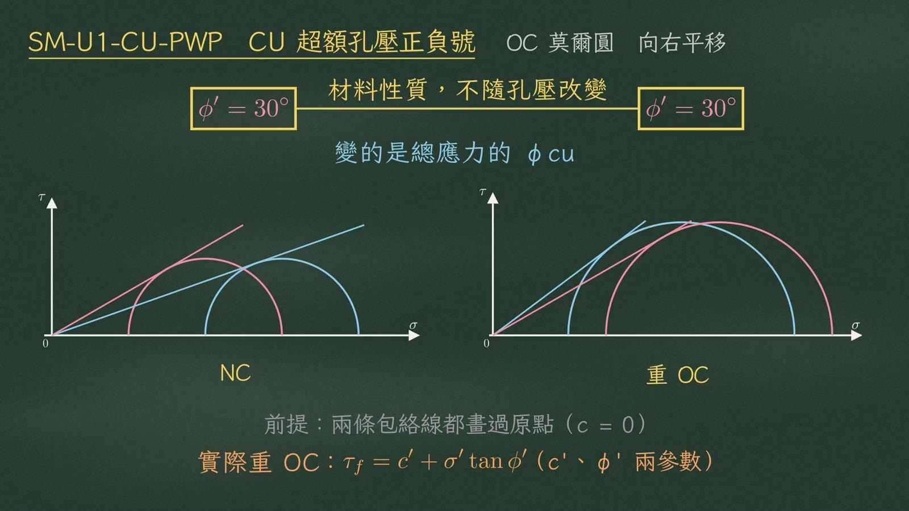
重 OC 開挖邊坡：剛挖完時負孔壓把有效應力撐高，短期看起來很安全。但負孔壓會慢慢吸水消散，強度跟著降低，所以邊坡常在完工好幾年後才滑動，長期才是控制狀況。
軟弱 NC 黏土上填土：剛好相反。剛填完時正孔壓最大，完工當下最危險；之後孔壓消散、土壤壓密，強度慢慢長回來。
| 情境 | \(u_f\) 隨時間 | 強度隨時間 | 控制狀況 |
|---|---|---|---|
| 重 OC 開挖邊坡 | 由負回升到 0 | 由高下降 | 長期 |
| 軟弱 NC 填土 | 由正下降到 0 | 由低上升 | 短期（完工時） |
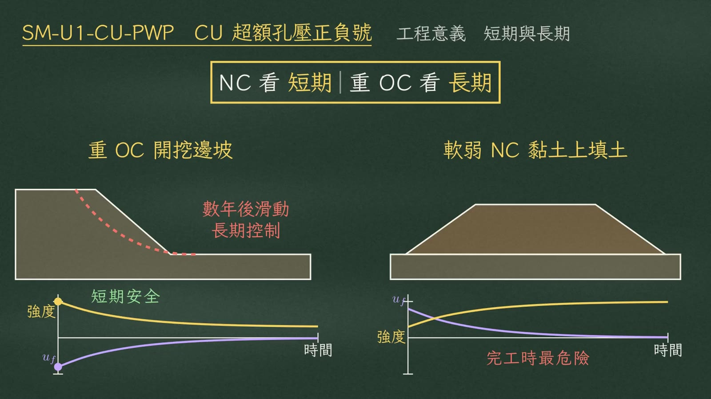
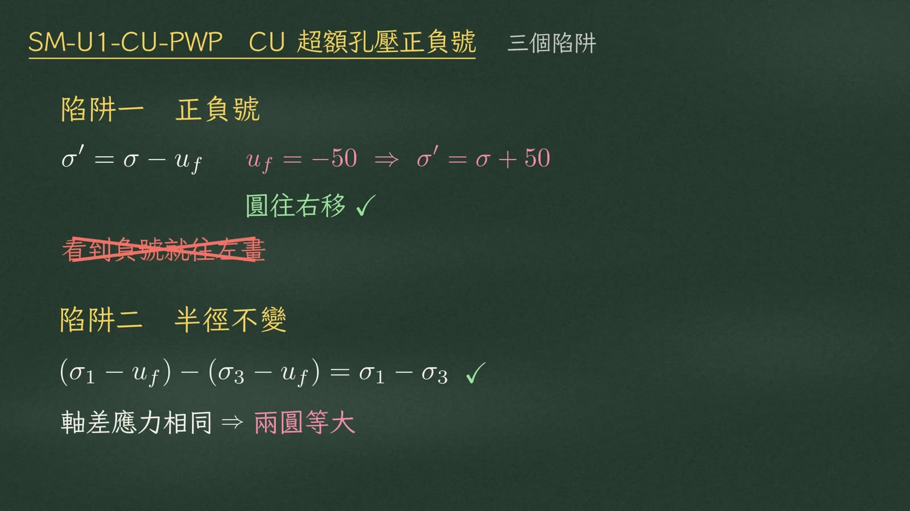
| 分母 | 算式 | 結果 |
|---|---|---|
| \((\Delta\sigma_d)_f\) | \(-50/300\) | ≈ −0.17 ✓ |
| \(\sigma_1\) | \(-50/400\) | −0.125 ✗ |
| \(\sigma_3\)（圍壓） | \(-50/100\) | −0.5 ✗（剛好是重過壓密的極端值，很容易被騙） |
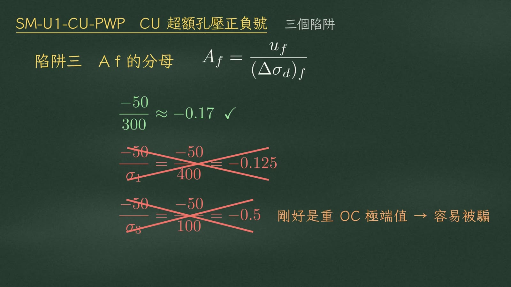
| NC | 重 OC | |
|---|---|---|
| 體積 | 剪縮 | 剪脹 |
| \(u_f\) | ＋ | − |
| \(A_f\) | 0.5～1 | < 0 |
| 有效圓 | 左移 | 右移 |
| 摩擦角 | \(\phi'>\phi_{cu}\) | \(\phi_{cu}>\phi'\) |
| 危險 | 短期 | 長期 |
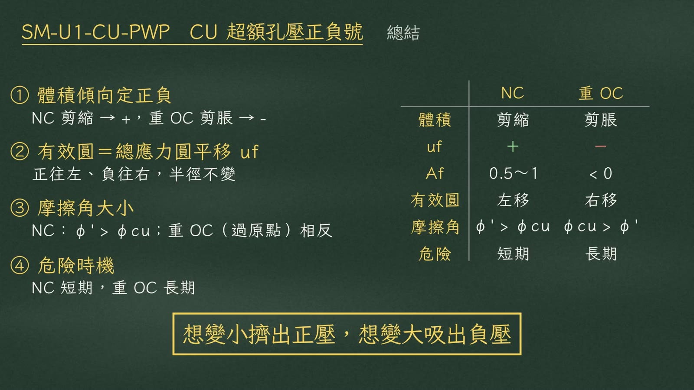